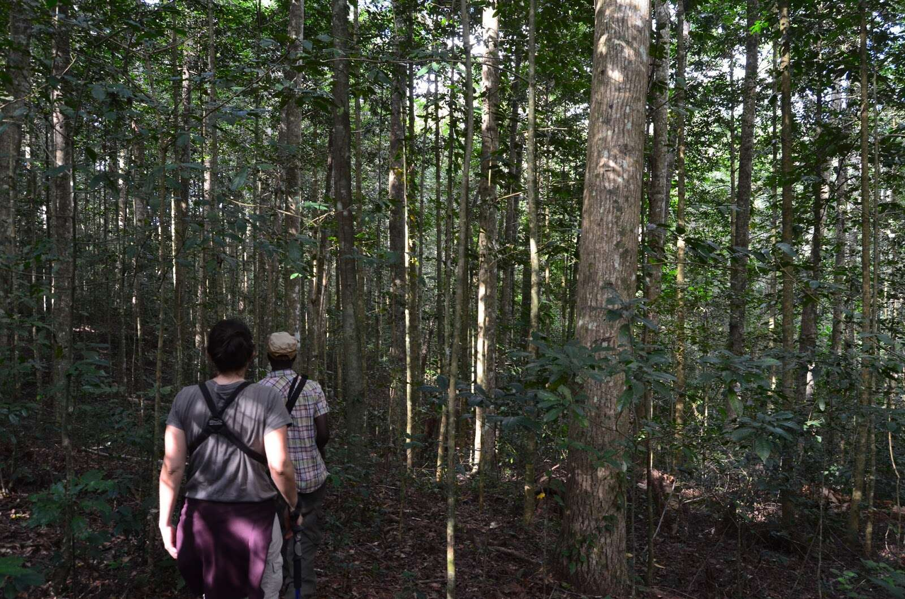
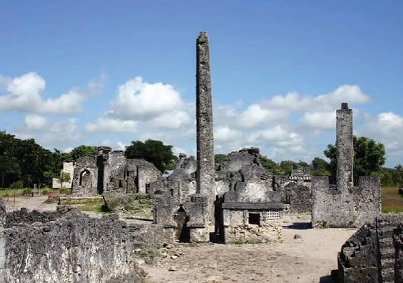
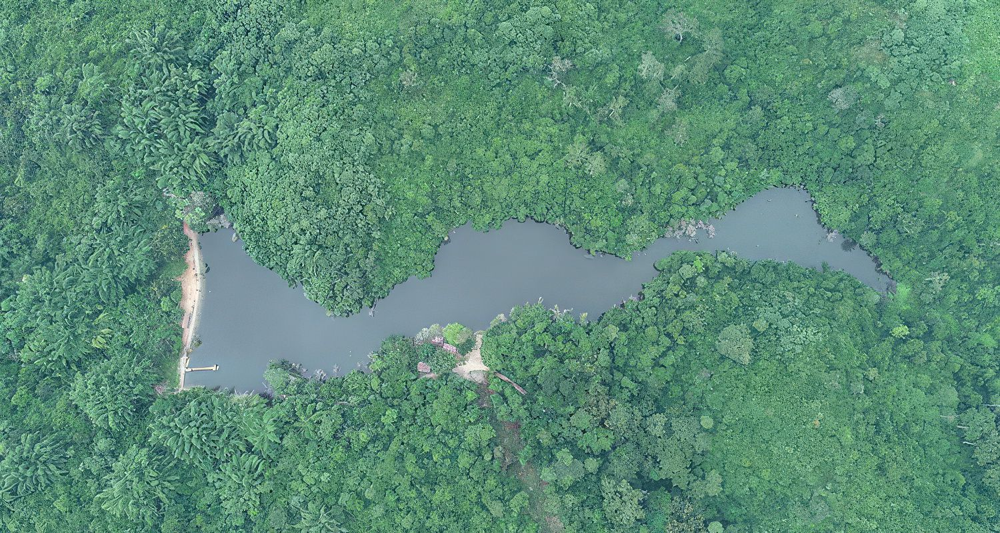
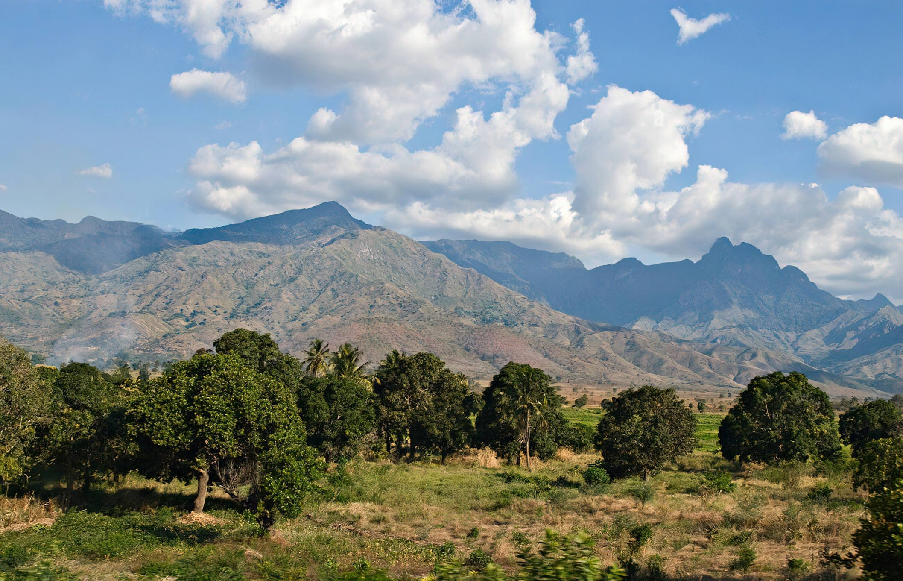
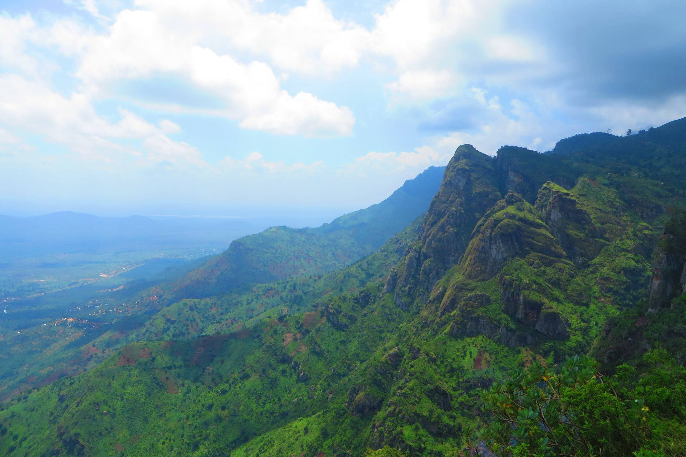

Rainforest hiking, bush-beach safaris and Swahili history - Saadani, Usambara, Bagamoyo and the Tanga coast.
Destinations in this Circuit

Amani Nature Forest Reserves
Apart from the Saintpaulia flowers, the reserve is gifted with other varieties of tourist attractions ranging from…

Amboni Caves
Amboni Limited, a company which was then operating sisal plantations in Tanga Region acquired the area in 1892.

Bagamoyo Historical Town
UNESCO-listed Swahili trading town - slave-trade history, Kaole ruins and coastal culture north of Dar es Salaam.

Pangani
The name Pangani owes to the river that runs through northern part of the Historical Town. Pangani is a very old town,

Pugu Kazimzumbwi Nature Forest Reserve
This rich portfolio of tourism attractions enable the reserve to offers enormous recreation satisfactions, meditation,
Saadani National Park
Saadani National Park is a one of a kind paradise with unique ecosystem where beach life meets wilderness.

Tanga Marine Park & Reserves
The Park covers an area of about 552 km² of which 85 km² are terrestrial and 467 km² are aquatic.

Uluguru Mountains
The Ulugurus lie 200 km inland from the Indian Ocean. They are part of a chain of mountains in eastern Africa…

Usambara Mountains
The Usambara's are a part of the ancient Eastern Arc chain which mountains stretch in a broken crescent from the…
Safari Packages

Bagamoyo Day Trip
From $638 / person
Bagamoyo, (which means “Lay down your heart”) lies 75kms north of Dar es Salaam. It was the most important trading centre of the east central coast of Africa in the late 19th centu
View Itinerary
Day Trip Hiking to Uluguru Mountains & Choma Waterfalls
From $638 / person
A Day hike to Uluguru Mountains will take you from Morogoro to this only unique southern Tanzania or Eastern Arc Mountains Ranges all the way to Bondwa peak (2080 m) or Lupanga Pea
View Itinerary
Day Trip to Saadani National Park
From $638 / person
This Day trip to Sadaani National Park Safari will take you from Dar es Salaam to this only unique wilderness in the north coast of Tanzania bordering with the Indian Ocean, this s
View Itinerary4 Days Saadani Bush & Beach
From $1,650 / person
Tanzania's only coastal national park - morning game drives among buffalo and elephant, afternoons on the Indian Ocean beach.
View Itinerary
2 Days Safari to Saadani National Park
Price on request
This 2 Days Sadaani National Park Safari will take you from Dar es Salaam to this only unique wilderness in the north coast of Tanzania bordering with the Indian Ocean, this safari
View Itinerary
3 Days Safari to Saadani National Park
Price on request
This 3 Days Sadaani National Park Safari will take you from Dar es Salaam to this only unique wilderness in the north coast of Tanzania bordering with the Indian Ocean, this safari
View Itinerary
3 Days Trip to Uluguru Mountains & Choma Waterfalls
Price on request
A 3 Days hike to Uluguru Mountains will take you from Morogoro to this only unique southern Tanzania or Eastern Arc Mountains Ranges all the way to Bondwa peak (2080 m) or Lupanga
View Itinerary
Amboni Caves Tours, Tanga
Price on request
Amboni Caves Tours from Tanga City, a visit to the Amboni Caves and a Kiomoni village all in one go during this half-day tour from Tanga City. Alongside a private guide, take a tou
View Itinerary
Caravan Serai Museum, Bagamoyo
Price on request
This museum in Bagamoyo Historic Town has a small display documenting the slave trade. The museum is in one of the historic building that was used a guest house for slave trade dea
View Itinerary
Kaole Ruins, Bagamoyo
Price on request
Kaole village formally known as ‘Pumbuji’ is one of the oldest villages that immigrants from Arabic countries choose as they landed on East Africa’s coast. Kaole ruins is located
View Itinerary
Old Fort, Bagamoyo
Price on request
The Old Fort in Bagamoyo, Tanzania is one of the historic building built by an Arab trader; Abdallah Sulleiman, during the 1860s. By then, it was a stand-alone two-storey building
View Itinerary
Roman Catholic Church, Bagamoyo
Price on request
Historic site with historic buildings, the site was established by Holly Ghost Fathers Missionaries in 1868 as the first missionary station along the interior of East African coast
View Itinerary
The Old German Boma, Bagamoyo
Price on request
The Old Boma in Bagamoyo, situated along the central coast of Tanzania, was built by the Germans in 1895. The BOMA served as administrative headquarters for German East Africa unti
View ItineraryReady to explore the Eastern Circuit?
Request a Quote